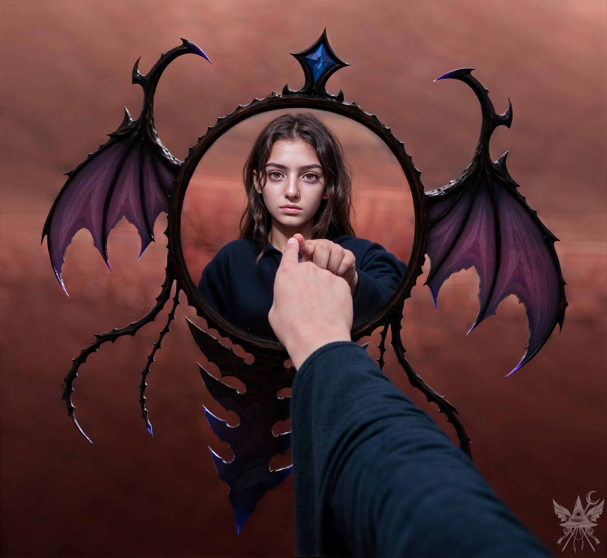
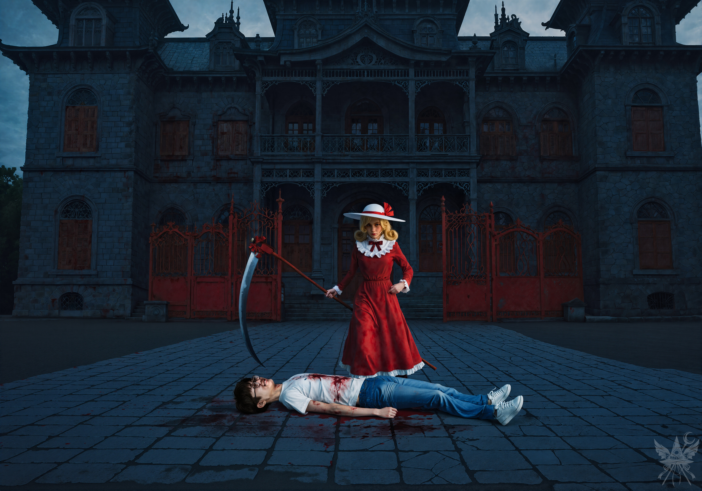
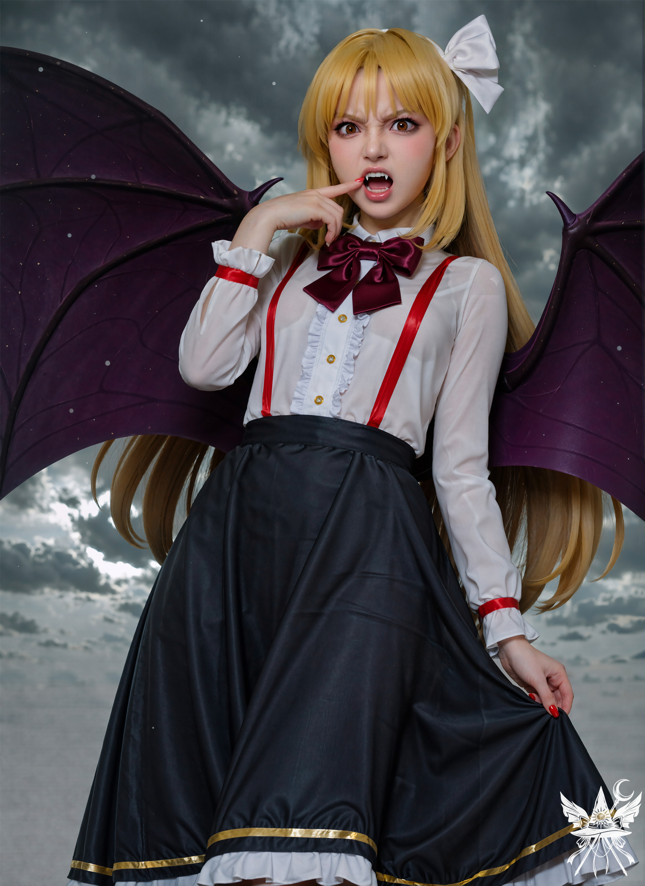

——太郎の唄——
(最初の6ページは乱暴に破り取られている)
—— 13ページ目 (判読不能) —— 魔法のクリスタルがあれば…あとは…力の源と…円を描いて……真ん中に置けば…よっしゃああああ！幻想郷、俺、行くぅぅぅ ^__^ !!!
—— 14ページ目 ——
(魔法陣らしきものが殴り書きされている)
—— 15ページ目 —— 俺は誰だ？ なんでここにいるんだ？ 何も思い出せない……やばい、詰んだ… とりあえず、全部忘れちゃう前に、ここに書いておこう。ここ、なんか見たことあるような気もするけど、思い出せない。誰かに聞かないと…上の字、俺の字っぽいし……てことは、これが俺の最初のイベント発生ってことか！！
—— 16ページ目 —— 冒険1日目 夜 やべぇ、恋したかも！ エレンたんって言うんだけど、このお店のオーナーさん、絶対魔女っ子属性持ちだわ^^ 今日は一緒に紅茶とケーキ食べたんだ！ エレンたんと早くにゃんにゃんしたい/// 明日はクリスタル探しのクエストに行くぜ！
—— 17ページ目 —— 冒険2日目 朝 よっ、日記！ ついに思い出したぜ、俺の名前！ 太郎だ！ 昨日、お店の屋根裏部屋で幽霊エンカウント！ マジでビビったし、危うくゲームオーバーになるところだった… 今日は皿洗い頑張ったのに、エレンたんはまだ俺とにゃんにゃんしてくれない…… フラグの立て方、間違えたか？
—— 18ページ目 —— 冒険2日目 夜 幽霊も…悪くないかも/// カナ・アナベラルっていうんだけど、ポルターガイストなんだって！しかもヤンデレ属性持ち！ 階段登って屋根裏部屋に行こうとしたら、飛んできたお玉が頭にヒットして超痛かった… にゃんにゃんはできなかったけど、クエストのアイテム発見！ なんと、カナの…の… ごめん、日記、これはちょっとここには書けない/// とにかく、すげーダメージ食らったけど
（青あざ2つと傷4つ！）、レアアイテムゲットだぜ！
—— 19ページ目 —— よっ、日記！ 今日、変な夢を見たんだ。知らない世界で、車を洗って、大好きな犬の世話をしてたんだ。そしたら、その犬が急に鳴き出して……死んじゃったんだ……俺、めっちゃ泣いた……悲しい夢だったなぁ…って、もしかしてこれって、前世の記憶…！？ T_T
—— 20ページ目 —— 冒険…えーっと、3日目？ 夜 吸血鬼エンカウント！！ 超接近してきて、地面に押し倒されたから、これはもうラッキースケベからのにゃんにゃん確定イベント！？ と思ったら…普通に殴られた… なんでだよぉぉぉ！ やっぱり俺も吸血鬼とか、サイボーグとか、悪魔になりてぇ！ あ、そうそう、その子の名前はくるみって言って、なんか用事があってお店に来たんだ。ガン見しちゃった///
—— 21ページ目 —— 俺は(このページは何度も書き直した跡があり、判読が困難である)… くるみにゃんも嫌いじゃない！！(以降、判読不能)
—— 22ページ目 —— エレンたんが『儀式』を手伝ってくれた！ ついにクエストクリアだぜ！ ポータルが開いて、猫の尻尾に鈴つけてる超可愛い子が話しかけてきたんだけど… なんか好感度が低かったみたいで… バカって罵られちゃった… まあいいや、あいつがいなくてもフラグは立つぜ！ そういえば、なんでか知らないけど、ここの可愛いヒロインたちの名前、結構知ってるんだよな。全員じゃないけど。エレンたんとゆうかりんのこと話したし。次は……そうだな…… チルノたんのルートに入って
（「にゃんにゃんする」と書こうとして消した跡がある)やる！！
—— 23ページ目 —— よっ、日記！ 今日は異世界転生何日目だっけ？ まあいいや！ エレンたんが今日、クエストアイテムの薬をくれたんだ。ゆうかりんに渡すお使いイベント発生！ エレンたん、今日もマジ天使だったなぁ！ くるみにゃんにも早く会いてぇ、あいつはツンデレ属性だから… こっちから積極的ににゃんにゃんしてフラグ立てないと、デレてこないんだよなぁ！ くるみにゃんは俺の嫁確定だから。それに、ゆうかりんにも初めて会うんだ… 新規ヒロインとか激アツすぎるだろ……絶対萌えるわ……
(以降、インク滲みのため判読不能)
＊＊＊
鈍く進むいかだの上で、血と錆の入り混じった生温かい風を顔に受けながら、ノートを閉じた。
すでにはるか前方を飛ぶオレンジとくるみの姿は、濃い赤褐色の霧に呑まれて見えない。
（『にゃんにゃんする』……文脈からして碌な意味じゃない。太郎の頭の中は、どこまでも身勝手な妄想で満たされているようね。これ以上覗き見するのは、精神衛生上よろしくないわ）
誰に見られるともしれないため、念のためにノートを開いた魔導書に挟み込む。
最初の数ページは乱暴に破り取られていたが、後半になるほど不思議と筆致は安定し、読みやすくなっていた。
役に立つ呪文を探すふりをしながら、思考を巡らせる。
やがて、小悪魔たちの羽音が変わった。
いつの間にかいかだは対岸へ到達し、宙に浮き上がっていたのだ。
黒い砂の岸辺に飛び降りたが、周囲にくるみやオレンジの気配はない。
仕方なく勘を頼りに歩みを進めると、すぐに足元は乾いてひび割れた茶色い土へと変わった。
草木の一本すら生えていない荒涼たる風景。
鉛色の空と霧が溶け合い、視界は極端に狭まる。
突然、左側からガサガサと微かな音が鼓膜を打った。
咄嗟に呪文を編み上げようと振り返り——足が縫い止められたように止まる。

冷たいガラスの表面に指先が触れそうな距離で、背筋に微量の静電気が走るような錯覚を覚える。
背後の血の池が放つ生温かい熱気とは対照的に、そこだけが異常なほど冷え切っていた。
かつてフレデリカのトンネルで恐怖を煽ったものと似ているが、これはより重圧を伴う禍々しさを放っている。自身の内面の奥底を覗き込まれるような、静かな圧迫感。
「メデたん、それ見ちゃダメ！」鋭い声と共に、いつの間にかオレンジが視界に割り込んできた。
「どうして？」
「ただ、見ちゃダメなの！ わたしも前に見たことがあるんだけど……ずっと見てたら、頭がおかしくなっちゃいそうだった！」オレンジは少し引き攣ったように笑うと、足早に前へと進み始めた。
杖を握り直し、足早にその後を追う。
振り返ると、無数の小悪魔たちの羽音が一定の距離を保ったまま付いてきていた。
突如、足の裏に硬く滑らかな感触が伝わり、つまずきそうになる。
紺色の石畳だった。
「入り口はもうすぐ！ 急ごう！」
オレンジの声に急かされ、霧を抜ける。
そこには、重厚で陰鬱な空気を纏う巨大な屋敷がそびえ立っていた。
だが、その荘厳な建築に目を向ける余裕など、微塵もなかった。
鉄が錆びたような強烈な悪臭と、生温かい血の匂いが鼻腔を突いたからだ。

石畳の継ぎ目を伝い、どす黒い液体が這うように広がっている。
仰向けに倒れていたのは、つい先程までくだらない妄想を口にしていた太郎だった。
彼の傍らには、圧倒的な「死」の気配そのものを具現化したような少女が、冷え切った眼差しで見下ろしている。
「あらあら、残念ね。こいつはもう、アップルパイの味も分からないだろうさ」少女の声には、憐憫など欠片もなく、ただ冷ややかな嘲笑だけが混じっていた。
「エリー！ 一体どうしたの！？」オレンジが血相を変えて駆け寄る。
「うっ……お…れ……死ぬのか…？ みんな……うう…」血の泡を吹きながら、太郎が弱々しく喘いだ。
「いつものことさ。死にたがりの女が屋敷に押しかけてきて、幽香様に会わせろって騒いでたのさ。それで、たまたま通りかかったこいつが巻き込まれただけ。厳密に言えば、こいつは私を守ろうとして、私の鎌に自分から飛び込んできたんだ。まあ、バカとハサミは使いようってね」エリーはひどく冷めた、事務的な口調で言い捨てた。
視線をずらすと、くるみが太郎の腹部の裂け目から目を離せないまま、石像のように立ち尽くしていた。
「それで、どうするの！？ 早く傷を治さないと！ でも、わたしには治し方がわからない……誰か助けて！」オレンジは手を伸ばしかけたが、あまりの惨状に触れることすらできずにいる。
「治すって、何をどうやって？ 人生に危険はつきものさ。いつ死ぬかなんて誰にも分からない。ほら、こいつはもう息も絶え絶えだ」
「メデたん！ メデたんは魔女なんだから、なんとかできるでしょ？ ねぇ、お願い！」オレンジがすがるような目を向けてきた、その時だった。
意識が遠のく中、太郎が最後の命の炎を燃やすように、くるみへ向かって腕を伸ばした。
「ク、くるみにゃん…！ 僕を……吸血鬼にしてくれ！ 頼むっす！」

ただでさえ青白かったくるみの顔から、さらに血の気が引く。
湿った重い風が吹き抜ける中、彼女の全身からプライドを傷つけられたような静電気がパチパチとはぜる気配がした。
圧倒的な嫌悪と、捕食者としての本能、そして責任から逃れたいという恐怖がないまぜになった痛々しいまでの動揺。
「なんて図々しいヤツだ。自分が吸血鬼になる資格があるとでも思ってるのかい？」エリーが鼻で笑う。
くるみは顔を真っ赤に染め上げ、荒い息を吐きながら太郎を睨み下ろした。
「ちょ、バカ！ あんた、なに言ってんのよ！」
それでも太郎は止まらない。
「で、でも…くるみにゃんは…お、俺の血が欲しいはずだろ？ ねぇ…？ 隠さなくていいんだ……！」
くるみは目を逸らし、固く口を閉ざした。
「くるみにゃん！ 分かってんだろ…？ お前の奥底に眠ってる衝動を…！ この新鮮で、熱くて、たまんねー血を渇望する、真の自分を解き放つんだ！ 誰にも邪魔させない！ 今こそ、本能のままに動くイベントなんだ！ さあ、俺を噛んでくれ！ 俺を吸血鬼ルートに導いてくれ！」
太郎の狂気じみた戯言に、エリーは苛立ちを隠さなかった。
「坊や、お前の吸血鬼に対する認識は現実とはかけ離れてるね。まあ、お前自身がもう現実とはほとんどおさらばしてるけどさ」
「ア、アタシは……っ、分かんない……分かんないわよ！」くるみの声が、奇妙なほど甲高く震えた。
「アタシが……本当に、そんなことしていいわけ！？ ちょっとオレンジ、エリーさん！ メデアちゃん！ 誰か、どうにかしなさいよっ！」
「私の答えはとっくに決まってる。聞こえてなかったのかい？」エリーは冷たく言い放ち、手にした得物を太郎の喉元へ這わせた。
「え、エリー！ ちょっと待ってよ！」オレンジが慌てて制止に入る。
「別に、急ぐわけじゃないけどね…」エリーは懐からリンゴを取り出し、一口かじって顔をしかめた。
「げっ、バッド・アップル」放り投げられた果肉から、醜い芋虫が這い出してくる。
オレンジは諦めきれないように、こちらへと振り返った。
「ねぇ、メデたんは人間でしょ？ 人間が吸血鬼になったらどうなるか、わかるよね！？」
（どうしてそうなる。相変わらずオレンジの論理は破綻しているわ）
「それに、メデたんって高位の魔女なんだって！ 資格も持ってるんでしょ？ ね？ 治せるよね？」オレンジはすがるように腕を掴んできた。その純粋すぎる熱意に当てられ、思わず後ずさる。
（高位の魔女？ 資格…？ 一体誰からそんな吹き込まれたのかしら）
「もしも……もしも、メデたんがこんな目に遭ったら？ 吸血鬼になりたい？ それとも傷を治したい？ 他に何かいい案がある！？」オレンジは矢継ぎ早にまくし立てる。
（そもそも、私は太郎じゃない）冷ややかな思考を巡らせながら、視線だけを手元の魔導書へと落とした。
（傷を治す…？ いや、そんなこと……）
沈黙が、血の匂いと共に重くのしかかっていた。
[SYSTEM ALERT: 音響兵器デプロイ完了]
▼ 本章の絶望を1000%味わうための専用聴覚データ ▼
■ YouTube：『Crimson Manicure (クリムゾン・マニキュア)』